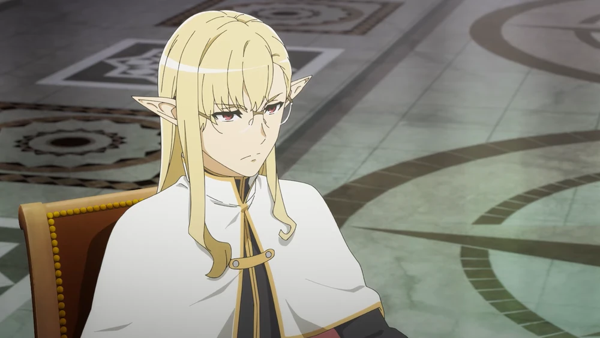
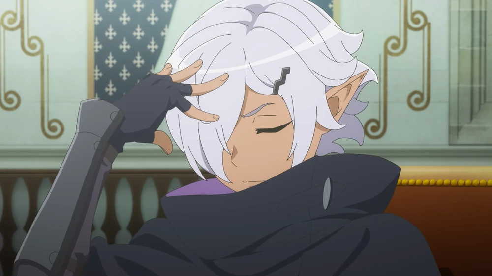
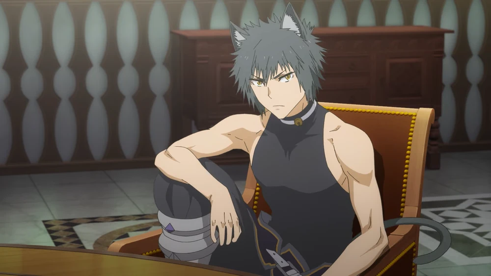
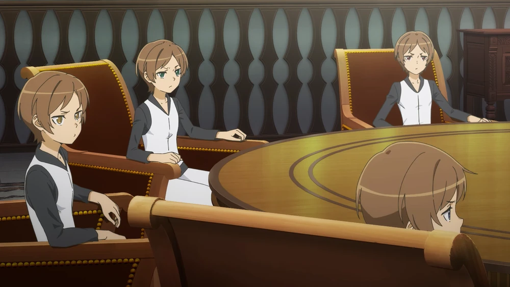
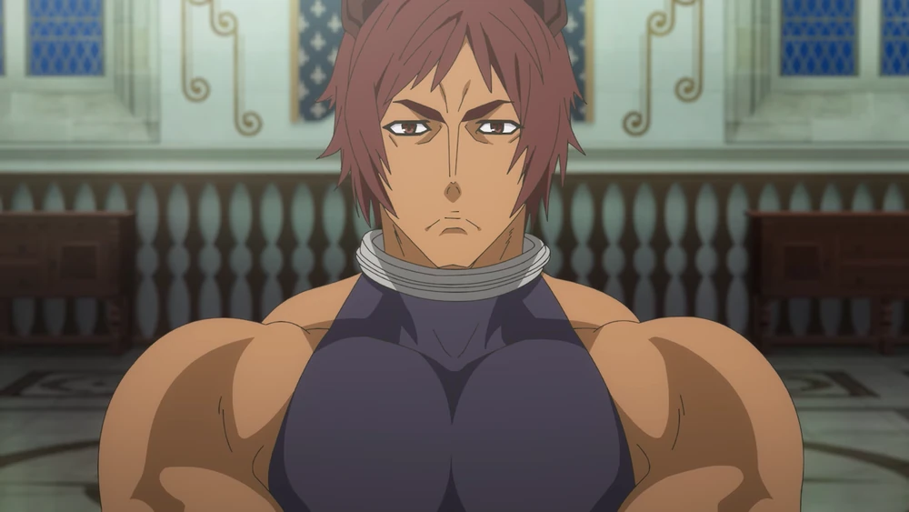

Members of the Freya Familia

Hedin Selland is a level 6 white elf he was a former king of the white elfs the role was force on him just like the dark elf king but when it comes down to combat both of them are ruthless with hedin magic is lighting magic and hogni dark magic but not just magic users they instead use swords to further on their attack and his role for the Freya familia is a exeucitive but often times acts like a stragist and commander

Hogni Ragnar is a level 6 dark elf he was also former king of elfs the elfs were dark elfs like Hedin they force the role onto him in overall both of them quite hate each other both kingdoms were at war with each other when freya found them she couldnt decide who she wanted so she watch the war go on until the only 2 elfs were hedin and hogni so when Freya show up and tell them that this was her doing instead of anger but thankful they never wanted to be kings so they thought of Freya as someone who knows them and Hogni role for the Freya familia is execustive often times sent to kill or deal with any problems and hes known to be the best Swordsman in all Orario

Allen Formel is part of the race of cat people as a child his village was raided and destory by monsters with only allen and his sister annya suriving after suriving the raid they were found and taken in by Freya afterwards at the age of 19 he was a level 6 and fastest level 6 ever and his role for the Freya Familia is Vice Captain and hes known to be a Skill and Fierce Spearsmen he can often stand toe to toe with ais wallensten who known to be the best Swordsman in the loki Familia

The Gulliver Brothers are all level 5 experts in team work with just one of them they a level 5 but all together they fight like a level 6 their teamwork makes them a powerful threat as for their back story they were slaves to a drawf they didnt know that they were slaves they thought they were workers so some time went by and freya found them and wanted them herself that said for the brothers when they first saw her it was like love at first sight so freya and the drawf make a deal for excahange for the brothers Freya had to give the drwaf 100 million for each brother that said when the drwaf was bragging about what happened saying how he trick a godesse but it didnt went so well for him afterwards the drwaf was found stab and toture by every weapon in the shop they felt so guilty when they heard what the godeses did and forever blame themself and after that they promised there loyalty to the Goddess and there role for the familia is exeuctives often assisting in operations like severel things but they are best known for its there teamwork that surpasses every single person in Orario

When Ottar was a child, he was abandoned without even having known his own name. Freya found him dying in an alley somewhere and told him he was beautiful and took him into her Familia. She also gave him his name at this time. that said When it comes down to power he surpases all hes the only level 7 in the world making him a powerful person he is the main reason why the freya familia is the strongest in the world and his role in the familia is captain where he stand by Freya side and stand there as a bodygaurd who a servent